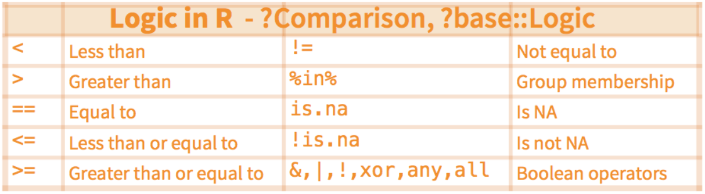

Chapter 7 Manipulate data with the tidyverse
7.0.2 Why “tidy” your data?
Tidying allows you to manipulate the structure of your data while preserving all original information. Many functions in R require (or work better) with a data structure that isn’t always easily readable by people.
In contrast to aggregation, which reduces many cells in the original
data set to one cell in the new dataset, tidying preserves a one-to-one
connection. Although aggregation can be done with many functions in R,
the tidyr package allows you to both reshape and aggregate within a
single syntax.
Install / Load the tidyr() package:
if (!require(tidyr)) {
install.packages("tidyr")
}
library(tidyr)7.0.3 Wide vs. long data
Wide format data has a separate column for each variable or each factor in your study. One row therefore can therefore include several different observations.
Long format data has a column stating the measured variable types
and a column containing the values associated to those variables (each
column is a variable, each row is one observation). This is considered
“tidy” data because it is easily interpreted by most packages for
visualization and analysis in R.
The format of your data depends on your specific needs, but some
functions and packages such as dplyr, lm(), glm(), gam() require
long format data. The ggplot2 package can use wide data format for
some basic plotting, but more complex plots require the long format
(example to come).
Additionally, long form data can more easily be aggregated and converted back into wide form data to provide summaries, or to check the balance of sampling designs.
We can use the tidyr package to to manipulate the structure of your
data while preserving all original information, using the following
functions:
pivot_longer()our data (wide --> long)
pivot_wider()our data (long --> wide)

Let’s pretend you send out your field assistant to measure the diameter at breast height (DBH) and height of three tree species for you. The result is this “wide” data set.
> wide <- data.frame(Species = c("Oak", "Elm", "Ash"),
DBH = c(12, 20, 13),
Height = c(56, 85, 55))
> wide
Species DBH Height
1 Oak 12 56
2 Elm 20 85
3 Ash 13 557.0.4 pivot_longer(): Making your data long
`?`(pivot_longer)Most of the packages in the Hadleyverse will require long format data
where each row is an entry and each column is a variable. Let’s try to
“gather” the this wide data using the pivot_longer() function in tidyr.
pivot_longer() takes multiple columns, and gathers them into key-value
pairs.
The function requires at least 3 arguments:
- data: a data frame (e.g. “wide”)
- cols: name or numeric index of the columns we wish to gather
- names_to: name of the new column containing variable names (e.g. “Measurement”)
- values_to: name of the new column containing variable values (e.g. “Value”) (e.g. “DBH” or “Height”)
# Gathering columns into rows
> long <- pivot_longer(data = wide,
cols = c("DBH", "Height"),
names_to = "dimension",
values_to = "cm")
> long
Species dimension cm
<chr> <chr> <dbl>
1 Chene DHP 12
2 Chene Haut 56
3 Orme DHP 20
4 Orme Haut 85
5 Frene DHP 13
6 Frene Haut 55Let’s try this with the C02 dataset. Here we might want to collapse the last two quantitative variables:
CO2.long <- pivot_longer(CO2, cols = c("conc", "uptake"), "response",
"value")
head(CO2)
head(CO2.long)
tail(CO2.long)7.0.5 pivot_wider(): Making your data wide
pivot_wider() uses the same syntax as pivot_longer(). The function requires 3 arguments:
- data: A data frame (e.g. “long”)
- names_from: Name of the column containing variable names (e.g. “Measurement”)
- values_from: Name of the column containing variable values (e.g. “Value”)
# Spreading rows into columns
> wide2 <- ivot_wider(data = long,
names_from = "dimension",
values_from = "cm")
> wide2
Species DBH Height
<chr> <dbl> <dbl>
1 Oak 12 56
2 Elm 20 85
3 Ash 13 557.0.6 A tibble structure for your data
Tibble is an alternate, more convenient, version for a data frame. Using tibble ensures good coding practices that can be missed using data.frame. For instance, it does not change the type of inputs (e.g. string to factors).
tibble(x = 1:3, y = c("a", "b", "c"))In addition, tibble simplifies the use of nested lists.
tibble(x = 1:3, y = list(1:5, 1:10, 1:20))You can use with a tibble all the functions applied to a data.frame.
7.0.7 separate(): Separate two (or more) variables in a single column

Some times you might have really messy data that has two variables in
one column. Thankfully the separate() function can (wait for it)
separate the two variables into two columns.
The separate() function splits a columns by a character string
separator. It requires 4 arguments:
- data: A data frame (e.g. “long”)
- col: Name of the column you wish to separate
- into: Names of new variables to create
- sep: Character which indicates where to separate
Let’s create a really messy data set:
set.seed(8)
messy <- data.frame(id = 1:4, trt = sample(rep(c("control", "farm"),
each = 2)), zooplankton.T1 = runif(4), fish.T1 = runif(4),
zooplankton.T2 = runif(4), fish.T2 = runif(4))
messyFirst, we want to convert this wide dataset to long format.
messy.long <- pivot_longer(messy,
names_to = "taxa",
cols = c("zooplankton.T1",
"fish.T1",
"zooplankton.T2",
"fish.T2"))
head(messy.long)
id trt taxa value
<int> <chr> <chr> <dbl>
1 1 farm zooplankton.T1 0.719
2 1 farm fish.T1 0.644
3 1 farm zooplankton.T2 0.545
4 1 farm fish.T2 0.264
5 2 farm zooplankton.T1 0.291
6 2 farm fish.T1 0.457Then, we want to split those two sampling times (T1 & T2). The syntax we
use here is to tell R separate(data, what column, into what, by what).
The tricky part here is telling R where to separate the character string
in your column entry using a regular expression to describe the
character that separates them. Here, the string should be separated by
the period ".".
messy.long.sep <- separate(messy.long, taxa, into = c("species", "time"), sep = "\\.")
head(messy.long.sep)
id trt species time value
<int> <chr> <chr> <chr> <dbl>
1 1 farm zooplankton T1 0.719
2 1 farm fish T1 0.644
3 1 farm zooplankton T2 0.545
4 1 farm fish T2 0.264
5 2 farm zooplankton T1 0.291
6 2 farm fish T1 0.457The argument sep = "\." tells R to splits the character string around
the period (.). We cannot type directly "." because it is a regular
expression that matches any single character.
7.0.8 Recap: tidyr
tidyr is a package that reshapes the layout of data sets.
- Convert from wide format to long format using
gather() - Convert from long format to wide format using
spread() - Split and merge columns with
unite()andseparate()
Here’s cheat sheet to help you use tidyr and dplyr for more data
wrangling:
https://www.rstudio.com/wp-content/uploads/2015/02/data-wrangling-cheatsheet.pdf
7.0.9 tidyr CHALLENGE
Using the airquality dataset, gather() all the columns (except
Month and Day) into rows. Then spread() the resulting dataset to
return the same data format as the original data.
`?`(air.quality)
data(airquality)7.0.10 Solution
# Use gather() to convert the dataset to long format
air.long <- gather(airquality, variable, value, -Month, -Day)
head(air.long)
# Note that the syntax used here indicates we wish to
# gather ALL the columns except 'Month' and 'Day'
# Then, use spread() to convert the dataset back to wide
# format
air.wide <- spread(air.long, variable, value)
head(air.wide)7.0.12 Solution
air.wide <- pivot_wider(air.long, values_from = "value", names_from = "variable")
head(air.wide)7.1 Data manipulation with dplyr

7.1.1 Intro to dplyr
The vision of the dplyr package is to simplify data manipulation by
distilling all the common data manipulation tasks to a set of intuitive
functions (or “verbs”). The result is a comprehensive set of tools
that facilitates data manipulation, such as filtering rows, selecting
specific columns, re-ordering rows, adding new columns and summarizing
data.
In addition to ease of use, it is also an amazing package because:
- it can crunch huge datasets wicked fast (written in
Cpp) - it plays nice with the RStudio IDE and other packages in the Hadleyverse
- it can interface with external databases and translate your R code into SQL queries
- if Batman was an R package, he would be
dplyr(mastering fear of data, adopting cool technologies)
Certain R base functions work similarly to dplyr functions, including:
split(), subset(), apply(), sapply(), lapply(), tapply() and
aggregate()
Let’s install and load the dplyr package:
if (!require(dplyr)) {
install.packages("dplyr")
}
library(dplyr)The dplyr package is built around a core set of “verbs” (or
functions). We will start with the following 4 verbs because these
operations are ubiquitous in data manipulation:
select(): select columns from a data framefilter(): filter rows according to defined criteriaarrange(): re-order data based on criteria (e.g. ascending, descending)mutate(): create or transform values in a column
7.1.2 Select a subset of columns with select()

The general syntax for this function is
select(dataframe, column1, column2, ...). Most dplyr functions will
follow a similarly simple syntax. select() requires at least 2
arguments:
- data: the dataset to manipulate
- …: column names, positions, or complex expressions (separated by commas)
For example:
select(data, column1, column2) # select columns 1 and 2
select(data, c(2:4,6) # select columns 2 to 4 and 6
select(data, -column1) # select all columns except column 1
select(data, start_with(x.)) # select all columns that start with "x."Here are more examples of how to use select():

The airquality dataset contains several columns:
> head(airquality)
Ozone Solar.R Wind Temp Month Day
1 41 190 7.4 67 5 1
2 36 118 8.0 72 5 2
3 12 149 12.6 74 5 3
4 18 313 11.5 62 5 4
5 NA NA 14.3 56 5 5
6 28 NA 14.9 66 5 6For example, suppose we are only interested in the variation of
“Ozone” over time within the airquality dataset, then we can select
the subset of required columns for further analysis:
> ozone <- select(airquality, Ozone, Month, Day)
> head(ozone)
Ozone Month Day
1 41 5 1
2 36 5 2
3 12 5 3
4 18 5 4
5 NA 5 5
6 28 5 67.1.3 Select a subset of rows with filter()
A common operation in data manipulation is the extraction of a subset
based on specific conditions. The general syntax for this function is
filter(dataframe, logical statement 1, logical statement 2, ...).

Remember that logical statements provide a TRUE or FALSE answer. The
filter() function retains all the data for which the statement is
TRUE. This can also be applied on characters and factors. Here is a
useful reminder of how logic works in R.

For example, in the airquality dataset, suppose we are interested in
analyses that focus on the month of August during high temperature
events:
> august <- filter(airquality, Month == 8, Temp >= 90)
> head(august)
Ozone Solar.R Wind Temp Month Day
1 89 229 10.3 90 8 8
2 110 207 8.0 90 8 9
3 NA 222 8.6 92 8 10
4 76 203 9.7 97 8 28
5 118 225 2.3 94 8 29
6 84 237 6.3 96 8 307.1.4 Sorting rows with arrange()
In data manipulation, we sometimes need to sort our data (e.g. numerically or alphabetically) for subsequent operations. A common example of this is a time series.
The arrange() function re-orders rows by one or multiple columns,
using the following syntax: arrange(data, variable1, variable2, ...).
By default, rows are sorted in ascending order. Note that we can also
sort in descending order by placing the target column in desc() inside
the arrange() function as follows:
arrange(data, variable1, desc(variable2), ...).
Example: Let’s use the following code to create a scrambled version of the airquality dataset
> air_mess <- sample_frac(airquality, 1)
> head(air_mess)
Ozone Solar.R Wind Temp Month Day
21 1 8 9.7 59 5 21
42 NA 259 10.9 93 6 11
151 14 191 14.3 75 9 28
108 22 71 10.3 77 8 16
8 19 99 13.8 59 5 8
104 44 192 11.5 86 8 12Now, let’s arrange the data frame back into chronological order,
sorting by Month, and then by Day:
> air_chron <- arrange(air_mess, Month, Day)
> head(air_chron)
Ozone Solar.R Wind Temp Month Day
1 41 190 7.4 67 5 1
2 36 118 8.0 72 5 2
3 12 149 12.6 74 5 3
4 18 313 11.5 62 5 4
5 NA NA 14.3 56 5 5
6 28 NA 14.9 66 5 6Try to see the difference when we change the order of the target columns:
arrange(air_mess, Day, Month)7.1.5 Create and populate columns with mutate()
Besides subsetting or sorting your data frame, you will often require
tools to transform your existing data or generate some additional data
based on existing variables. We can use the function mutate() to
compute and add new columns in your dataset.
The mutate() function follows this syntax:
mutate(data, newVar1 = expression1, newVar2 = expression2, ...).

Let’s create a new column using mutate(). For example, suppose we
would like to convert the temperature variable from degrees Fahrenheit
to degrees Celsius:
> airquality_C <- mutate(airquality, Temp_C = (Temp-32)*(5/9))
> head(airquality_C)
Ozone Solar.R Wind Temp Month Day Temp_C
1 41 190 7.4 67 5 1 19.44444
2 36 118 8.0 72 5 2 22.22222
3 12 149 12.6 74 5 3 23.33333
4 18 313 11.5 62 5 4 16.66667
5 NA NA 14.3 56 5 5 13.33333
6 28 NA 14.9 66 5 6 18.88889Note that the syntax here is quite simple, but within a single call of
the mutate() function, we can replace existing columns, we can create
multiple new columns, and each new column can be created using newly
created columns within the same function call.
7.2 dplyr and magrittr, a match made in heaven

The magrittr package brings a new and exciting tool to the table: a
pipe operator. Pipe operators provide ways of linking functions together
so that the output of a function flows into the input of next function
in the chain. The syntax for the magrittr pipe operator is %>%. The
magrittr pipe operator truly unleashes the full power and potential of
dplyr, and we will be using it for the remainder of the workshop.
First, let’s install and load it:
if (!require(magrittr)) {
install.packages("magrittr")
}
require(magrittr)Using it is quite simple, and we will demonstrate that by combining some
of the examples used above. Suppose we wanted to filter() rows to
limit our analysis to the month of June, then convert the temperature
variable to degrees Celsius. We can tackle this problem step by step, as
before:
june_C <- mutate(filter(airquality, Month == 6), Temp_C = (Temp -
32) * (5/9))This code can be difficult to decipher because we start on the inside and work our way out. As we add more operations, the resulting code becomes increasingly illegible. Instead of wrapping each function one inside the other, we can accomplish these 2 operations by linking both functions together:
june_C <- airquality %>%
filter(Month == 6) %>%
mutate(Temp_C = (Temp - 32) * (5/9))Notice that within each function, we have removed the first argument which specifies the dataset. Instead, we specify our dataset first, then “pipe” into the next function in the chain.
The advantages of this approach are that our code is less redundant and
functions are executed in the same order we read and write them, which
makes its easier and quicker to both translate our thoughts into code
and read someone else’s code and grasp what is being accomplished. As
the complexity of your data manipulations increases, it becomes quickly
apparent why this is a powerful and elegant approach to writing your
dplyr code.
Quick tip: In RStudio we can insert this pipe quickly using the
following hotkey: Ctrl (or Cmd for Mac) +Shift+M.
7.3 dplyr - grouped operations and summaries
The dplyr verbs we have explored so far can be useful on their own,
but they become especially powerful when we link them with each other
using the pipe operator (%>%) and by applying them to groups of
observations. The following functions allow us to split our data frame
into distinct groups on which we can then perform operations
individually, such as aggregating/summarising:
group_by(): group data frame by a factor for downstream commands (usually summarise)summarise(): summarise values in a data frame or in groups within the data frame with aggregation functions (e.g.min(),max(),mean(), etc…)
These verbs provide the needed backbone for the Split-Apply-Combine
strategy that was initially implemented in the plyr package on which
dplyr is built.


Let’s demonstrate the use of these with an example using the
airquality dataset. Suppose we are interested in the mean temperature
and standard deviation within each month:
> month_sum <- airquality %>%
group_by(Month) %>%
summarise(mean_temp = mean(Temp),
sd_temp = sd(Temp))
> month_sum
Source: local data frame [5 x 3]
Month mean_temp sd_temp
(int) (dbl) (dbl)
1 5 65.54839 6.854870
2 6 79.10000 6.598589
3 7 83.90323 4.315513
4 8 83.96774 6.585256
5 9 76.90000 8.3556717.3.1 dplyr & magrittr CHALLENGE
Using the ChickWeight dataset, create a summary table which displays
the difference in weight between the maximum and minimum weight of each
chick in the study. Employ dplyr verbs and the %>% operator.
`?`(ChickWeight)
data(ChickWeight)7.3.2 Solution
# Use group_by() to divide the dataset by "Chick"
# Use summarise() to calculate the weight gain within each group
> weight_diff <- ChickWeight %>%
group_by(Chick) %>%
summarise(weight_diff = max(weight) - min(weight))
> weight_diff
Source: local data frame [50 x 2]
Chick weight_diff
(fctr) (dbl)
1 18 4
2 16 16
3 15 27
4 13 55
5 9 58
6 20 76
7 10 83
8 8 92
9 17 100
10 19 114
.. ... ...Note that we are only calculating the difference between max and min weight. This doesn’t necessarily correspond to the difference in mass between the beginning and the end of the trials. Closely inspect the data for chick # 18 to understand why this is the case:
> chick_18 <- ChickWeight %>% filter(Chick == 18)
> chick_18
weight Time Chick Diet
1 39 0 18 1
2 35 2 18 1Here we notice that chick 18 has in fact lost weight (and probably died
during the trial). From a scientific perspective, perhaps a more
interesting question is which of the 4 diets results in the greatest
weight gain in chicks. We could calculate this using 2 more useful
dplyr functions: first() and last() allow us to access the (need I
say respectively) first and last observation within a group. ++++
7.3.3 dplyr & magrittr NINJA CHALLENGE
Using the ChickWeight dataset, create a summary table which displays,
for each diet, the average individual difference in weight between the
end and the beginning of the study. Employ dplyr verbs and the %>%
operator. (Hint: first() and last() may be useful here.)
7.3.4 Ninja hint
Note that we can group the data frame using more than one factor, using
the general syntax as follows: group_by(group1, group2, ...)
Within group_by(), the multiple groups create a layered onion, and
each subsequent single use of the summarise() function peels off the
outer layer of the onion. In the above example, after we carried out a
summary operation on group2, the resulting data set would remain
grouped by group1 for downstream operations.
7.3.5 Solution
> diet_summ <- ChickWeight %>%
group_by(Diet, Chick) %>%
summarise(weight_gain = last(weight) - first(weight)) %>%
group_by(Diet) %>%
summarise(mean_gain = mean(weight_gain))
> diet_summ
# A tibble: 4 × 2
Diet mean_gain
<fctr> <dbl>
1 1 114.9
2 2 174.0
3 3 229.5
4 4 188.3Given that the solution to the last challenge requires that we compute
several operations in sequence, it provides a nice example to
demonstrate why the syntax implemented by dplyr and magrittr. An
additional challenge (if you are well versed in base R functions)
would to reproduce the same operations using fewer key strokes. We
tried, and failed… Perhaps we are too accustomed to dplyr now. ++++
7.4 dplyr - Merging data frames
In addition to all the operations we have explored, dplyr also
provides some functions that allow you to join two data frames together.
The syntax in these functions is simple relative to alternatives in
other R packages:
left_join()right_join()inner_join()anti_join()
These are beyond the scope of the current introductory workshop, but they provide extremely useful functionality you may eventually require for some more advanced data manipulation needs.